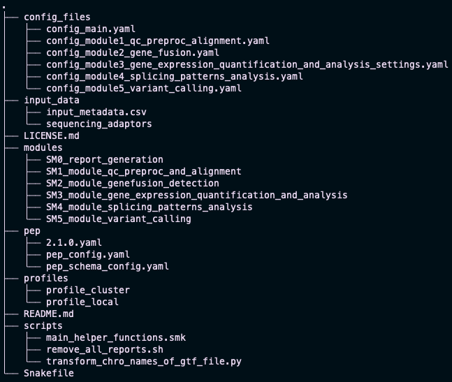

Installation
SnakeSplice is based on the Snakemake workflow management system. The pipeline is written in Python and is compatible with Linux and MacOS.
Requirements
In order to use SnakeSplice you need to have SnakeMake installed. You can either visit the Snakemake documentation for detailed installation guidelines or use the following instructions to install Snakemake and SnakeSplice.
Installation via Conda/Mamba
We recommend to install Snakemake and SnakeSplice via the Conda/Mamba package manager.
1. Set-up of Conda/Mamba
In order to take advantage of Mamba, an extremely fast and robust replacement for the Conda package manager, we recommend to install the managers via the Miniforge installers. You can find them here: Miniforge Repository
Here are the steps for Linux systems:
curl -L -O "https://github.com/conda-forge/miniforge/releases/latest/download/Miniforge3-$(uname)-$(uname -m).sh"
bash Miniforge3-$(uname)-$(uname -m).sh
Restart your terminal
Don't forget to restart your terminal after the installation!
2. Installation of Snakemake
After a successfull installation of Conda/Mamba, you can proceed with installing Snakemake.
# Create a new environment
mamba create -n snakemake -c conda-forge -c bioconda snakemake
# Activate the environment
conda activate snakemake
Verify the installation
You can verify the installation by running snakemake --version.
3. Get SnakeSplice
After the installation of Snakemake, you can proceed with installing SnakeSplice.
# Install SnakeSplice by cloning the repository
git clone https://git.bihealth.org/btg/software/snakesplice.git
# Change into the SnakeSplice directory
cd snakesplice
The initial set-up should look now like this: 
4. Adjust your Snakemake Profile
Snakemake gives you the possibility to adjust the pipeline to your specific needs by using profiles. Here one can define the number of threads, the amount of memory, whether conda environments should be used, and so on...
Default settings
The default settings allocate 8 cores and 30GB of memory to the pipeline.
If you want to change these settings, you can do so by adjusting the config.yaml file in the profiles/profile_local directory.
For this tutorial, we will use the default settings.
You can find the config.yaml file here.
5. Celebrate
You are now ready to use SnakeSplice!
Please continue with the tutorial to learn how to use SnakeSplice.